Ljus, luftig och neutral. Vita rutor som svävar på en ljusgrå bakgrund, mjuka hörn, blå accent och ikoner i knapparna. Kortens förhandsvisning ligger på en diskret prickad yta. Känns som en modern webbapp.
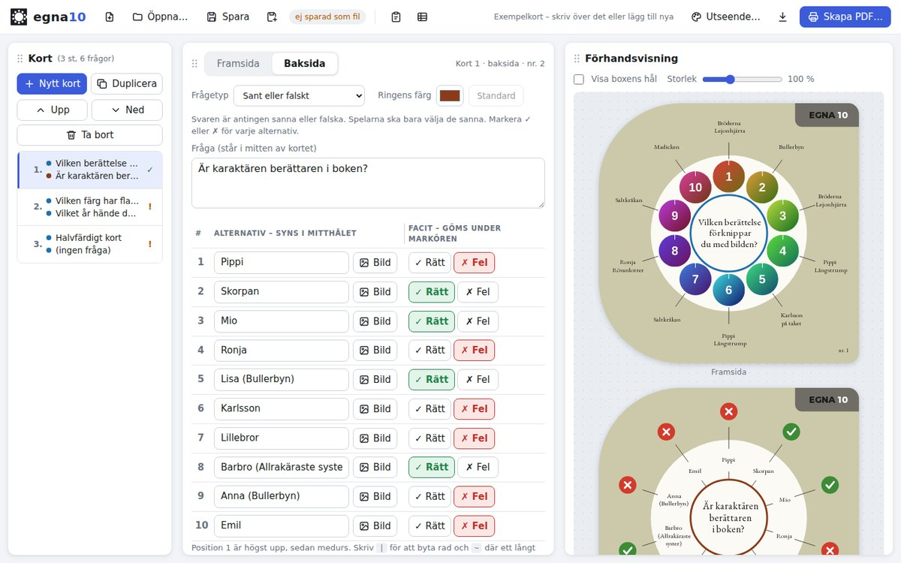
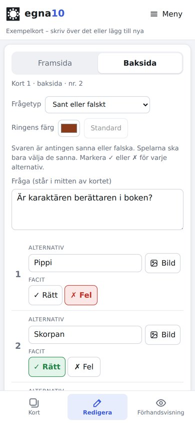
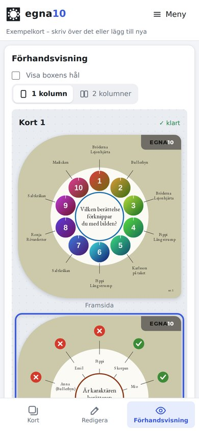
Mörk arbetsyta som i ett ritprogram. Rutorna sitter kant i kant, och korten lyser upp mot en nästan svart bakgrund. Bärnstensgul accent. Skonsam för ögonen på kvällen.
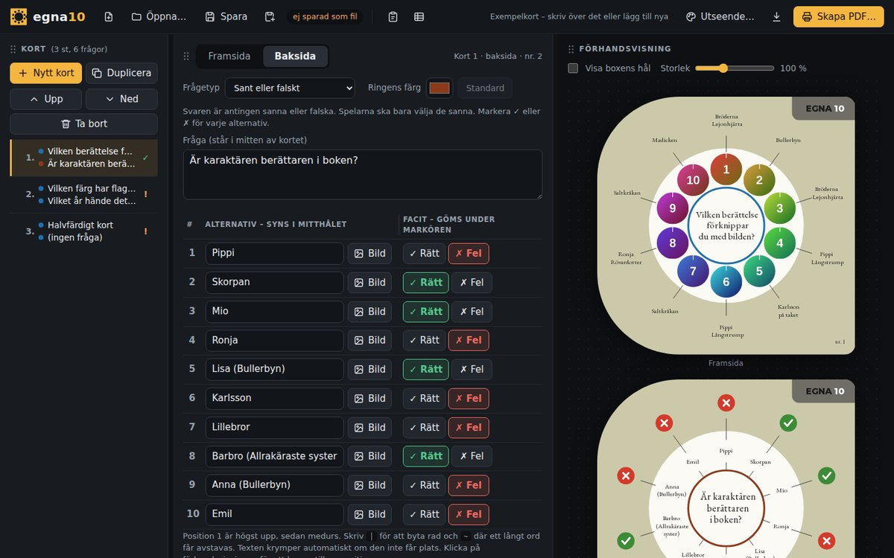
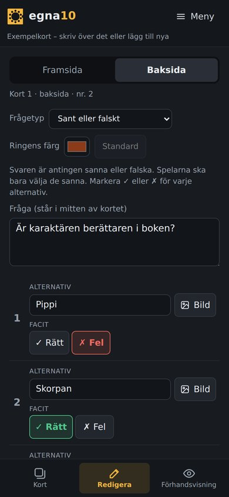
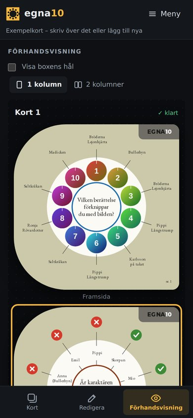
Varm och lekfull, byggd på kortens egna färger: gräddvita rutor, grå topplist som kortens etikett, rundade knappar och den blå ringfärgen som accent. Rubrikerna i samma typsnitt som på korten.
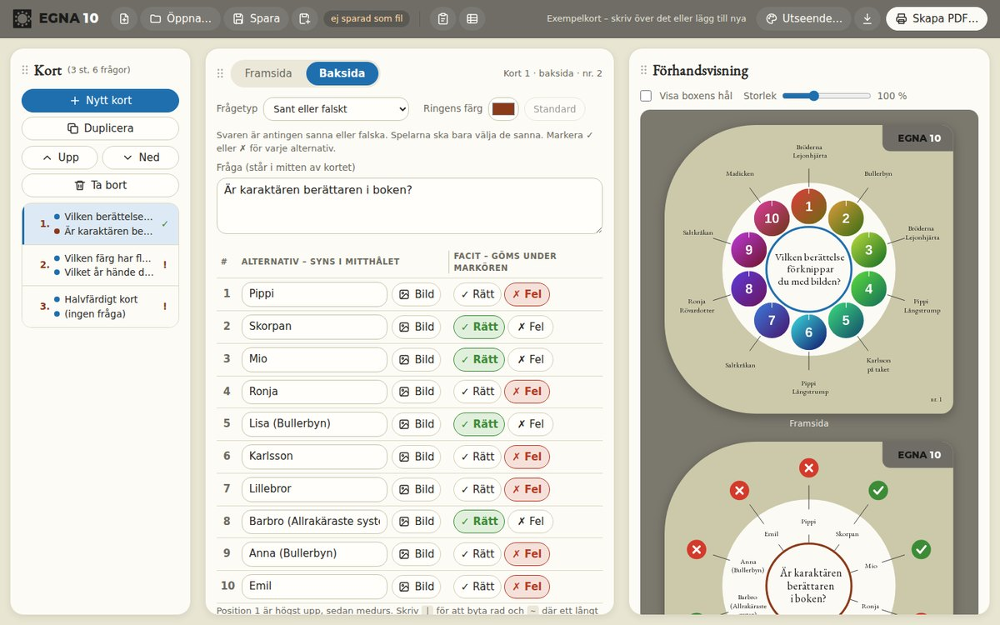
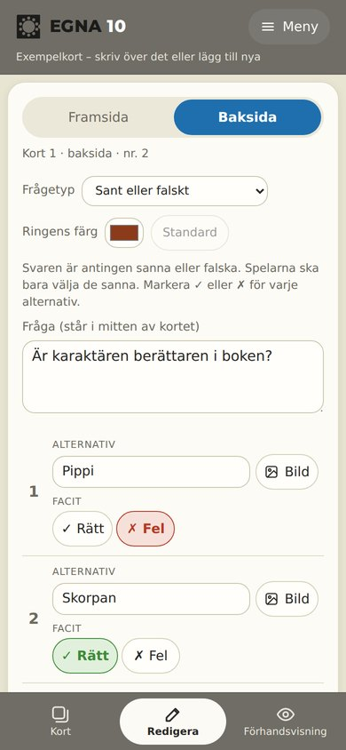
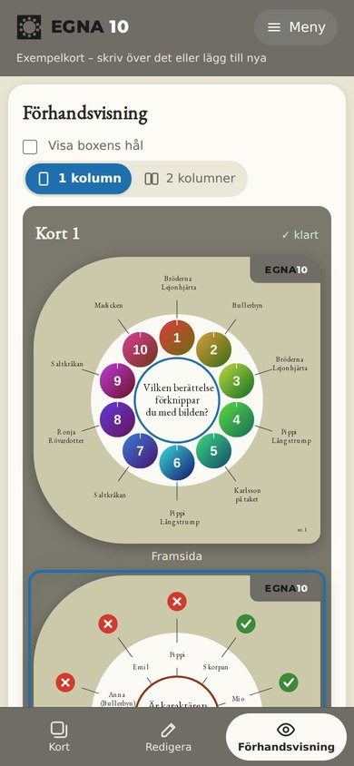
Papper och tusch. Skarpa svarta linjer, versala etiketter och röd accent som saxarna i PDF:en. Korten ligger på en grön skärmatta med rutnät – passar att sidan handlar om att skriva ut och klippa.
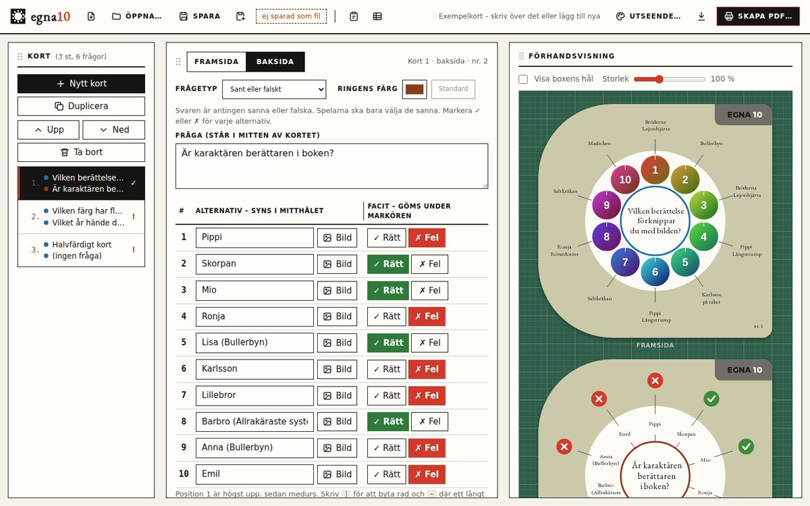
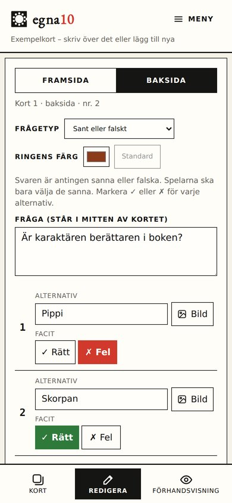
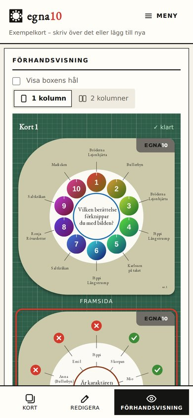